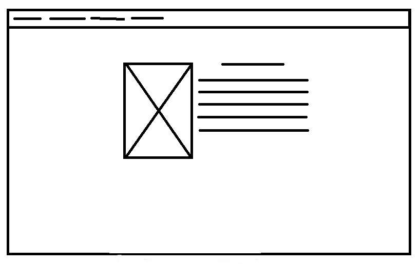
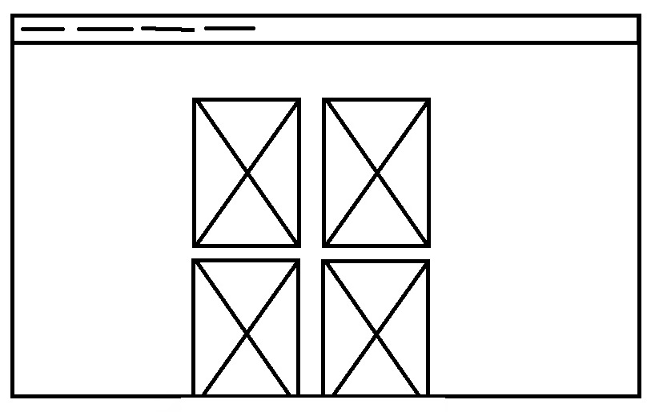
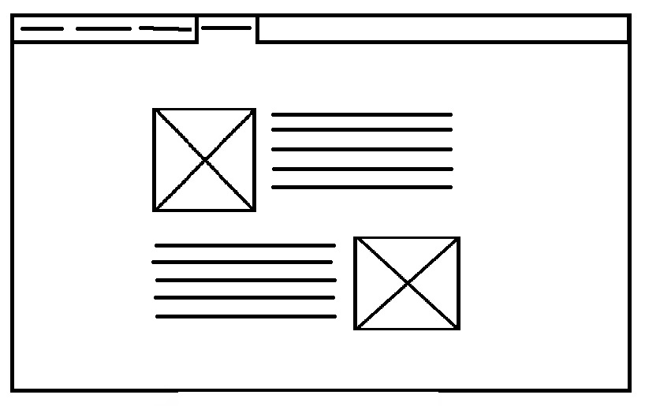

Főoldal:Előszónak annyit hogy, eleinte nehéz volt időt találni mivel nagyon sok dolog összejött az életemben de örülök annak hogy végül meg tudtam valósítani a terveimet. Sok tervem nem volt, így gondoltam egy fogadóoldalt készítek egy képpel és a nevemmel, a háttér nagy felbontású, lényegében a háttér homályos, ez nagyon is tetszett, továbbá mikor állítottam be a méretét nagyon tetszett hogy széles monitorokon éppen a fej bal felső oldala látszódik így megmaradt ez a fajta kinézet
Hodor:Kezdetben egy tájékoztató lett volna rólam, aminek a kezdeti terve látható, nagy változás nem is született, de úgy éreztem hogy mivel nem lenne annyira egyedi és láttam hogy létezik HodorIpsum így megkértem magát Hodort hogy meséljen magáról néhány szót, szerintem nagyon rendes ember mivel a halálból is visszajött csak is azért hogy megtegye ezt nekem<3 és az egész oldalam köré építettem, a terv után annyit változtattam hogy a szöveg mögé egy kis háttérszínt tettem hogy ne legyen annyira egyszínű.

Galéria:Hodor után nem igazán tudtam mit rakjak a galériába, így Hodor legszebb és legjobb képeit, pillanatait raktam, hogy mindenki lássa milyen jó ember is ő, viszont történt egy kis változás, a két sor helyett egy sor kép jelenik meg, mivel nem nagyon tetszett egyre kissebb ablakméretben hogy volt mikor még a kép fele látszódott és utána ugrott csak le, itt a szándékosan nincs háttér mivel a képeknek keretei lettek és az egér rávitele után árnyék animáció is történik.
Időm hiányába készitettem el, de szerencsére sikerült olyat csinálnom, amivel elégedett is vagyok, élveztem a készités minden percét és örülök hogy tanultam html programozást is, remélem a jövőben segitségemre lesz, viszont nehézségeim közé tartozott hogy ideális képet találjak a témámhoz, mivel nem akartam sablonos, mindenkiéhez hasonló portfóliót készíteni, de rájöttem hogy Hodor mindig is tartani fogja nekem az ihlet ajtaját, a gombok készítése sem volt egyszerű számomra, hiszen rengeteg időt elvett mikor még az első tervhez ragaszkodtam.

Menü:Elöször lenyitható menüre gondoltam de mivel valami oknál fogva elcsúsztak a gombok, így inkább maradtam a sima ball szélre igazított mellett amit később, a tervezéskor úgy terveztem hogy az aktuális oldal gombja beleolvad a hátterébe, de később változtattam rajta a mostani ovális kialakitással mivel az aktuális és a mellette lévő gombok között maradt egy csík amit nem tudtam eltűntetni.